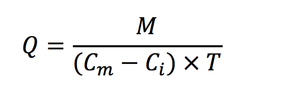
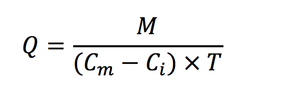

Voici la formule :
Le résultat du calcul est :
0.021699327258079704

Réalisé par Jules Messin et Benjamin Vigner.
Bonjour et bienvenue sur notre projet de la SAE105 intitulé "calcul du débit d’une rivière par mesure de concentration en sel".
L'objectif de ce projet est de déterminer le débit de la rivière en utilisant les concentrations de sel mesurées grâce à une sonde.
Nous devons donc concevoir un site web (HTML/CSS) à partir d'un fichier Python contenant le calcul du débit
et un graphique représentant la concentration en sel sur une période de temps.
Voici la formule :
Le résultat du calcul est :
0.021699327258079704